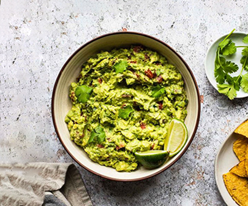

Авокадо можна пом’яти виделкою, перебити в блендері або дрібно нарізати. Додати сік лайма, та подрібнений перець чилі. Можна подавати з начос, тако чи лавашом.
- авокадо (1шт.)
- чилі перець (1шт.)
- рослинне масло (1ст.л.)
- сік ½ лимона (лайма)